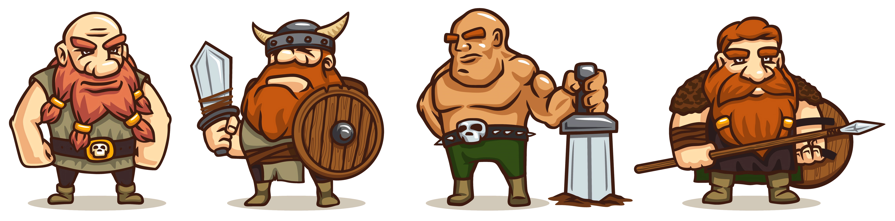

A criação de personagens é a base para qualquer jogo de RPG. É nela que você vai construir a personalidade, habilidades e história do seu personagem, transformando-o em alguém único e inesquecível. Para isso, é importante seguir alguns passos importantes.
Comece definindo a raça e a classe do seu personagem. As raças, como humanos, elfos, anões e outras, possuem características distintas que afetam sua aparência, habilidades e personalidade. Já a classe define suas habilidades em combate, magia ou outros aspectos do jogo. É importante equilibrar suas habilidades para que seu personagem seja equilibrado e tenha chances de sobrevivência em diversas situações.
Uma vez que suas habilidades foram definidas, é hora de criar sua personalidade. Quem é seu personagem? Qual sua história? O que o motiva? É importante ter uma história coerente para seu personagem, pois ela vai influenciar suas ações durante o jogo.
Por fim, escolha suas armas e equipamentos. É importante que eles estejam alinhados com sua história e personalidade, para que sejam coerentes com o personagem que você criou.
Lembre-se de que a criação de personagens é um processo dinâmico e pode mudar conforme o jogo avança. Então, não tenha medo de experimentar e deixar sua criatividade fluir! Com estes passos, você terá um personagem incrível e pronto para se juntar as aventuras.